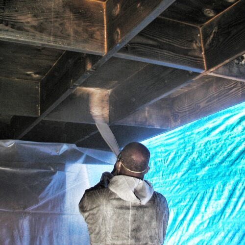

01
FIRE & SMOKE DAMAGED WOOD
화재 · 연기 피해 목재

목재 결에 스며든 그을음과 탄화층을
물을 더하지 않고 제거합니다.
목재 빔과 트러스, 서까래, 벽체와 바닥의 구조재는 화재 이후 그을음과 탄화층, 연기 잔류물로 덮입니다. 샌딩과 손 닦기는 시간이 오래 걸리고 넓은 면적에서는 인력 부담이 크며, 소다 블라스팅은 분사한 매체를 다시 수거해야 합니다.
드라이아이스 세척은 표면의 탄화층과 그을음을 건식으로 제거하는 데 활용됩니다. Cold Jet 자료에 따르면 탄화된 재료와 카본 잔류물이 제거되면서 냄새의 원인이 함께 줄어들어, 지붕 구조재를 교체하는 대신 세척으로 복원한 사례가 보고되어 있습니다. 다만 탄화 깊이와 구조재의 강도는 별도로 확인해야 합니다.
대표 대상
- 목재 빔 · 트러스 · 서까래
- 벽체 내부 구조재
- 바닥 구조재 · 원목 바닥
주요 오염물
그을음 · 탄화물 · 연기 잔류물 · 카본 침착물